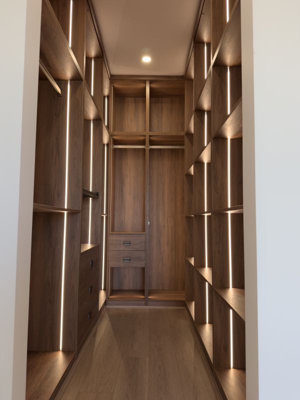

If you love your street but not your house, a knockdown rebuild could be the most cost-effective path to the home you've always wanted. Rather than paying a premium to buy into a new suburb, you stay where you are — and build exactly what you want on land you already own.
But it's not the right solution for everyone. Here's what you need to know before you decide.
A knockdown rebuild is exactly what it sounds like: your existing home is demolished and a brand-new home is built in its place. You keep your land, your street, your neighbours — and you get a fully custom home designed around your lifestyle.
In metropolitan Sydney, a quality knockdown rebuild typically starts from $600,000 and rises significantly depending on size, design and specification. Demolition alone runs $20,000–$50,000. The key advantage is that you're not paying stamp duty on the land component a second time.
"The clients who get the most out of a knockdown rebuild are those who have a clear vision and trust their builder to execute it."
Most knockdown rebuilds require a Development Application (DA) through your local council, unless your design qualifies as a Complying Development Certificate (CDC), which can be faster. A realistic timeline from first consultation to handover is 18–24 months.
Considering a knockdown rebuild in Sydney? TURYN's directors offer complimentary consultations to help you understand what's possible on your land.
Book a Consultation© 2025 TURYN Pty Ltd. All rights reserved.
Privacy Policy · Terms of Use